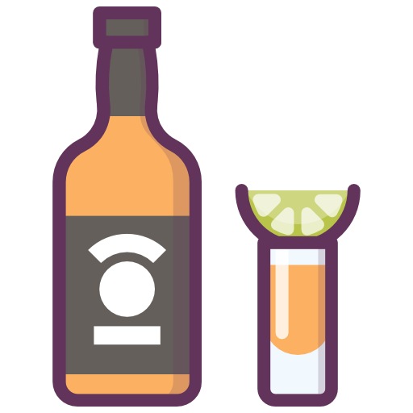

Olá, Bem vindo ao Acervo Digital
Sobre
Objetivo do Projeto "Acervo Acadêmico do IFNMG - Campus Salinas"
O principal objetivo do portal é centralizar, preservar e democratizar o acesso à produção intelectual e científica desenvolvida no âmbito do IFNMG - Campus Salinas, atuando como o principal instrumento de transparência e difusão do conhecimento da instituição. A plataforma está estruturada em quatro eixos fundamentais de atuação:
- Acervo Bibliográfico Digital
- Acesso rapido a produção científica
- Banco de Projetos de Pesquisa
- Vizualização de Dados
- 


Projetos
No IFNMG - Campus Salinas, a pesquisa científica não fica só na teoria. Nossos projetos são desenvolvidos para resolver os problemas reais do produtor rural e das empresas do Norte de Minas. Conectamos diretamente nossos laboratórios com as demandas do campo, criando soluções práticas para a agropecuária, a tecnologia de alimentos e o meio ambiente. Nosso foco é gerar inovação aplicada que fortalece a economia local. É a ciência saindo do papel e transformando a realidade da nossa região.
| Título | Temática | Coordenador | Ano | Processo |
|---|
Visualização de Dados
A visualização de dados é fundamental pois transforma conjuntos de dados complexos e volumosos em formatos gráficos compreensíveis, como mapas, gráficos e painéis interativos, permitindo que as pessoas identifiquem rapidamente padrões, tendências, correlações e anomalias que seriam difíceis de discernir em tabelas ou textos. Isso facilita a comunicação eficaz, promove uma compreensão mais profunda dos dados por públicos variados e apoia uma tomada de decisão mais rápida, informada e baseada em evidências.
Temática
Produtos
Eventos
Projetos por Temática
Produtos gerados dos projetos
| Nome do Projeto | Professor/Orientador | Produto |
|---|
Contato do Agente de Inovação do IFNMG Salinas
luisphelps671@gmail.com
38 988643820